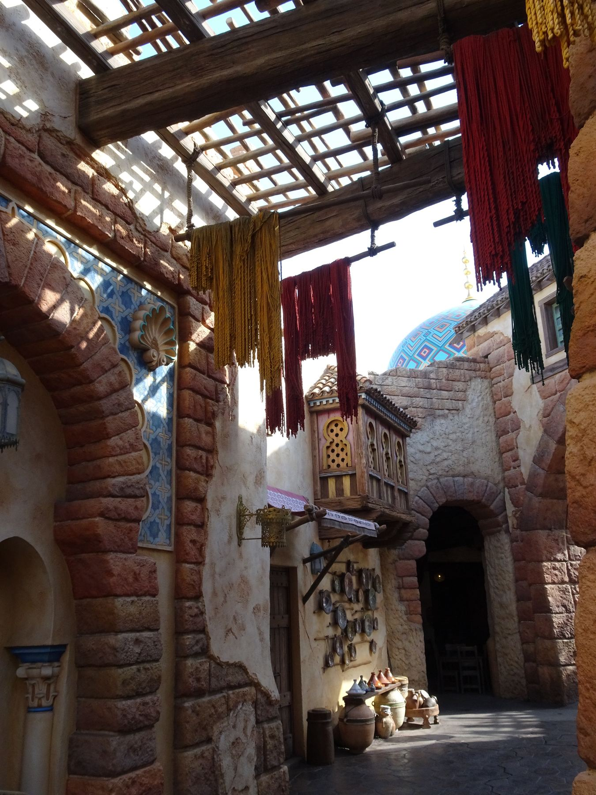

東京ディズニーシーの奥深くに広がる、エキゾチックな「アラビアンコースト」。その広場でひときわ大きな存在感を放つ黄金のドームが、ボートライド「シンドバッド・ストーリーブック・ヴォヤッジ」の入り口です。
ゲストはシンドバッドと、子トラのチャンドゥと共に、黄金の財宝よりも価値のある「本当の宝（友情や勇気）」を求めて、心のコンパスに従い未知なる海へと船出します。しかし、この優しさに満ち溢れた今のストーリーの裏には、ディズニーのクリエイター（イマジニア）たちによる壮絶な挑戦とリニューアルの歴史が眠っています。そして、その挑戦の起点にあったのは、1000年以上の時を経て語り継がれてきた「千夜一夜物語」の原典との、真剣な向き合いでした。
「シンドバッド」とは、8〜9世紀頃にアラビア語圏で成立したとされる説話集「千夜一夜物語（アルフ・ライラ・ワ・ライラ）」に登場する、バグダッドの商人・船乗りです。物語の中でシンドバッドは、合計7回の航海に出かけ、毎回死の淵をさまよいながら生き延び、莫大な富を持ち帰ります。
しかしその原典の姿は、現在のアトラクションのシンドバッドとは大きく異なります。原典のシンドバッドは純粋に「強欲で野心的な男」です。財宝への執着心から何度も命がけの航海に出かけ、巨人を騙して殺し、老人を背負って奴隷のように働かされ、それでも富への渇望を捨てられない。彼はいわば、人間の本能的な欲望を体現した存在として描かれているのです。
原典の7回の航海は、それぞれに強烈な「恐怖と生存」の物語です。巨鳥「ロック」の卵を割って脱出するエピソード、一つ目の巨人（サイクロプス）に仲間を食われながら必死に逃げるエピソード、脚の悪い老人に背中に乗られたまま離れられなくなるエピソード——これらはいずれも、シンドバッドが「生き残るために知恵を絞る」という、サバイバルの色濃い物語です。登場する生き物たちは友情の象徴ではなく、すべてシンドバッドの命を狙う「脅威」として描かれています。
第1航海：巨大な岩（実はロックの卵）の上で眠り、目覚めたら船が去っていた。ロックの足につかまって脱出。
第2航海：宝石の谷に転落。ワシの足に肉ごとしがみつき脱出する。
第3航海：一つ目の巨人に仲間を食われる。火で目を焼いて撃退し、いかだで逃亡。
第4航海：島の住民に強制的に結婚させられ、妻が死ぬと生きたまま墓に埋められる。
第5航海：ロックの雛を殺したことで親鳥に報復される。老人の海に遭遇。
第6航海：難破し無人島に流される。川を地下でくぐり抜けて王国へ到達。
第7航海：象に連れられて象の墓場を発見し、象牙を財宝として持ち帰る。
これらの物語において一貫しているのは「危機→知恵や運による脱出→財宝の獲得」という構造です。シンドバッドが危機を乗り越えるのは、怪物と「友達になる」からではなく、怪物を出し抜くか逃げ切るからです。原典の7つの航海の物語には、現代的な意味での「友情」や「自己犠牲」の精神は、ほとんど登場しません。
2001年の開園当初、このアトラクションは今とは全く異なる「シンドバッド・セブンヴォヤッジ（七つの航海）」という名称で、暗く重厚な世界観を持つアトラクションでした。原典のシンドバッドに忠実に、「巨人の宝を奪う」といった人間の『強欲さ』を軸にした不気味な冒険譚として設計されていたのです。
原典の精神を忠実に再現しようとした旧バージョンは、イマジニアたちの真摯な挑戦の産物でした。しかし結果として、その世界観はファミリー向けのテーマパークとの相性が悪く、深刻な問題を引き起こします。
・巨人は獰猛で凶暴。人間を食べようとし、目を不気味に光らせて激怒していた。
・シンドバッドを嵐で誘惑する人魚（サイレン）たちは、妖しく薄気味悪い歌を歌いながらニヤリと笑う、完全な「敵キャラ」だった。これは原典の「サイレン（船乗りを惑わす魔物）」の描写に忠実な表現だった。
・シンドバッドの相棒である可愛い子トラの「チャンドゥ」は、当時まだ存在すらしていなかった。
・全体のトーンが暗く、BGMも重厚で不安を煽るものだった。
このあまりにダークな世界観は、小さなお子様たちを泣かせ、ボートがいつもガラガラに空いてしまうというディズニーシー屈指の「不人気アトラクション」という不名誉な状況を生み出しました。そこで2006年、イマジニアたちは前代未聞の全面リニューアルを決意します。その決断の核心にあった問いは「原典の何を残し、何を変えるか」でした。
リニューアルにあたってイマジニアたちが行ったのは、原典の7つの航海を徹底的に研究し、「どの要素を残し、どの要素を読み替えるか」を一つひとつ判断していく作業でした。その結果として生まれた現在のアトラクションは、原典への深いリスペクトを保ちながらも、全く異なるテーマへと昇華されています。
| 登場する要素 | 原典（千夜一夜物語） | ディズニー版（現行） |
|---|---|---|
| シンドバッドの動機 | 財宝への強欲。生き延びるためなら手段を選ばない。 | 「本当の宝物」＝友情や勇気を求める純粋な冒険心。 |
| 巨人（サイクロプス） | 仲間を食い殺す凶悪な怪物。目を焼いて撃退する。 | シンドバッドと楽器で交流し、友達になる穏やかな存在へ。 |
| ロック（巨鳥） | 雛を殺されて復讐する猛禽。生命の脅威。 | 雛のロックと仲良く遊ぶ愛らしいシーンに転換。 |
| 人魚・サイレン | 船乗りを惑わして嵐へ誘い込む妖しい魔物。 | 美しく歌い踊る友好的な存在。見せ場の一つに。 |
| 象 | 第7航海で墓場に連れていかれる。象牙＝財宝の源。 | シンドバッドを助け、共に旅する仲間的な存在として登場。 |
| 猿の島 | （直接の対応エピソードなし） | バナナを分け合って交流する、友情の象徴シーンとして新設。 |
| 旅の結末 | 莫大な財宝を得てバグダッドへ帰還。次の航海への欲望は消えない。 | 「心のコンパス」＝信じる心こそが真の宝だと悟って帰還。 |
この比較表が示す通り、ディズニー版のリニューアルは単なる「怖い要素の削除」ではありませんでした。登場するすべての怪物・生き物を「敵」から「友達の候補」へと読み替えることで、物語の根幹にある問いそのものを変えたのです。原典の問いが「どう生き延びるか」であったのに対し、現行版の問いは「誰と出会い、何を学ぶか」に変わっています。
興味深いのは、原典に登場する生き物たちの「種類」そのものは残されていることです。巨人も、ロックも、サイレンも、象も、すべて原典由来の存在です。イマジニアたちは原典のキャストを丸ごと書き換えるのではなく、それぞれの生き物に「友達になれる可能性」を見出し、シンドバッドとの関係性だけを根本から変えました。これは千夜一夜物語という文化的な遺産への、深いリスペクトの表れといえるでしょう。
現行アトラクションに乗車しながら、各シーンの原典との対応を意識すると、また別の味わいが生まれます。
アトラクションを蘇らせるために、ディズニーが頼ったのが、映画『アラジン』や『美女と野獣』などの音楽を手掛けた世紀の天才作曲家、アラン・メンケンでした。イマジニアたちは彼に直接交渉し、このアトラクションのためだけにオリジナル楽曲を書き下ろすよう依頼します。
こうして生まれたのが、一度聴いたら忘れられない大名曲「コンパス・オブ・ユア・ハート」です。劇中で力強く歌い上げる坂元健児氏（劇団四季の初代ライオンキング・シンバ役など）の圧倒的な歌声と合わさり、この歌こそがアトラクションの主役となりました。「心のコンパス（信じる心）を信じて進めば、本当の宝物が見つかる」という強烈なメッセージが、ボートを進めるたびに私たちの心に語りかけてきます。
注目すべきは、メンケンが「アラビア音楽の語法」を巧みに取り入れながら、ディズニーらしい明るさと力強さを両立させている点です。弦楽器のアラベスク風の装飾音や、打楽器のリズムパターンには、原典の文化的背景への敬意が込められています。原典のシンドバッドが生きた8〜9世紀バグダッドの空気を音楽に乗せながら、物語のテーマは現代的な「友情と勇気」へと昇華させる——まさにアラン・メンケンだけが成し得た魔法といえます。
楽曲はアトラクション全体を通じて様々なアレンジで繰り返されます。出港時には期待感あふれる明るいイントロとして、嵐のシーンでは不安を煽る短調のアレンジとして、そしてフィナーレでは全員で歌い上げる壮大な合唱として。一つの主題が旅を通じて「成長」していく構造は、シンドバッド自身の内面の変化と完全にシンクロしており、聴くたびに新たな発見がある精巧な設計になっています。
暗黒期を抜け出すためのもう一つの隠し玉。それが、リニューアル時に新しく追加された子トラの相棒「チャンドゥ」の存在でした。獰猛な大人のトラではなく、あえて「お調子者で愛くるしい赤ちゃんトラ」にすることで、アトラクション全体のトーンを一気にマイルドにすることに成功しました。
原典の千夜一夜物語において、シンドバッドに「動物の相棒」は登場しません。チャンドゥはディズニーが新たに創造したオリジナルキャラクターです。なぜ「トラ」だったのか。それはアラビア文化圏においてトラが「勇気と強さの象徴」として古くから崇められてきた動物だからです。しかし「大人のトラ」では威圧感が生まれてしまう。「赤ちゃんトラ」にすることで、勇気のシンボルでありながら誰もが抱きしめたくなる愛らしさを両立させたのです。
チャンドゥはシンドバッドの行く先々で、おもちゃ箱に隠れたり、財宝の山に埋もれてバナナを咥えたりと、愛嬌たっぷりに動き回ります。この可愛い演出によって、以前は子供たちが怖がっていた巨人のシーンや猿の島も「シンドバッドが彼らと友達になり、楽器やバナナを分け合う温かいシーン」へと劇的に生まれ変わりました。チャンドゥの存在そのものが、アトラクション全体の「読み替え」を体現するキャラクターなのです。
このアトラクションが位置する「アラビアンコースト」というエリア自体にも、深く優しいバックグラウンドストーリーが設定されています。
映画『アラジン』のラストで、ランプの魔人ジーニーは自由になり、アラジンとジャスミン姫は結ばれました。ジャスミンの父であるサルタン国王は、この若者たちの偉大な愛と奇跡を祝うために、ジーニーにお願いをして「誰もが平和に、異国の者とも友情を結べる、魔法の楽園（アラビアンコースト）」を作り出したのです。
この設定は、シンドバッドの物語と鮮やかに呼応しています。原典のシンドバッドが追い求めたのは「財宝」でした。ジーニーが魔法で作り出した「アラビアンコースト」が体現するのは「友情と共存」です。そしてリニューアル後のシンドバッドが辿り着く答えもまた「友情こそが本当の宝」です。エリアの成り立ちとアトラクションのテーマが、まるで一冊の本のように重なり合っているのです。
千夜一夜物語の原典から遥かな時を経て、ここアラビアンコーストでは「強欲な冒険者」シンドバッドの物語が「友情の航海者」の物語へと生まれ変わっています。それはイマジニアたちが原典と向き合い続けた末に見つけた、1000年の物語への独自の答えなのかもしれません。
最終編集日：